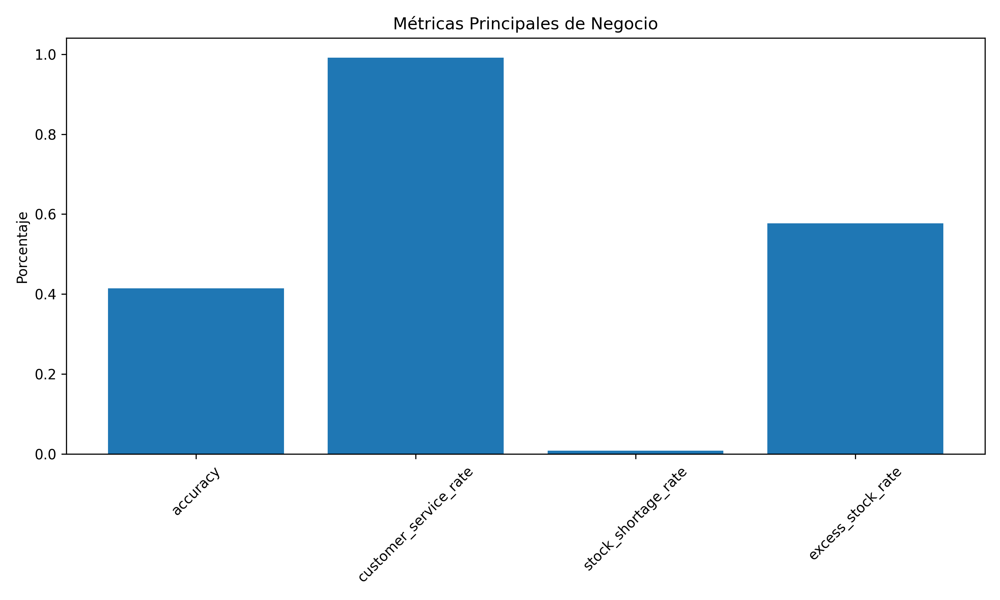

Informe Final: Sistema de Predicción de Stock Teórico
Fecha de generación: 15/07/2025 11:46:23
Resumen Ejecutivo
Este informe presenta los resultados del sistema de predicción de stock teórico desarrollado como proyecto fin de grado.
43.7%
Eficiencia Rotación
12,592,217
Impacto Financiero
Análisis de Modelos
Comparación de diferentes enfoques de modelado:
Modelos de Clasificación
Modelos de Regresión
Análisis de Negocio
Impacto del sistema en métricas de negocio clave:

Análisis de Umbrales
El análisis de umbrales de decisión muestra que 0.3 es el valor óptimo:
Análisis por Segmentos
Top 5 Alias
Top 5 Tiendas
| ID Localización |
Exactitud |
Conclusiones y Recomendaciones
El sistema de predicción de stock teórico implementado ha demostrado ser efectivo para optimizar la gestión de inventario:
- Tasa de servicio del 99.1% que minimiza roturas de stock
- Impacto financiero positivo de 12,592,217 unidades monetarias
- Enfoque híbrido que combina modelos de clasificación y regresión
Recomendaciones
- Mantener el umbral de decisión en 0.3 para maximizar el impacto financiero
- Implementar el factor de calibración de 4.5 para el modelo de regresión
- Entrenar modelos específicos para los segmentos con peor rendimiento